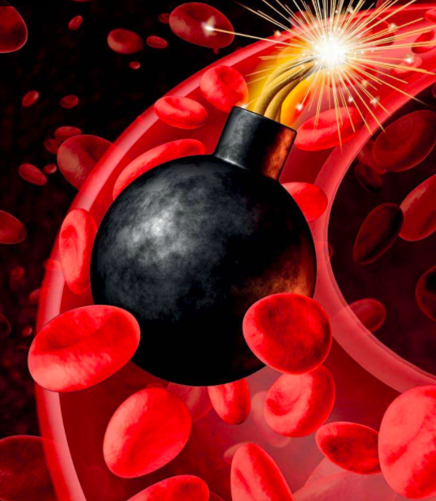

Eres intimidado por las enfermedades "incurables" para comprar más remedios. Cuando limpias los vasos: la hipertensión y el dolor articular pasarán, los niveles de azúcar en la sangre volverán a la normalidad, la digestión y la visión mejorarán. Y eso no es todo.
Imagina que eres una de las 20 personas en una sala. Tarde o temprano, la hipertensión matará a 7 personas. El dolor articular hará que cuatro queden discapacitados. El tracto gastrointestinal limitará 10 a su forma de comer, y solo tres podrán leer sin gafas. Lo más triste es que todas estas 20 personas podrían estar absolutamente saludables hasta los 90. Estas enfermedades no son manifestaciones del envejecimiento. No. Todas estas enfermedades son solo una consecuencia de los vasos contaminados.
- ¿Por qué el 90% de las enfermedades comienzan debido a los vasos sanguíneos?
- El principal enemigo de los vasos sanguíneos es el colesterol. ¿Qué más podría ser?
- 7 señales de que necesitas hacer una limpieza
- ¿Es posible limpiar los vasos tu mismo?
Ricardo Bennett realizó más de 9,5 mil cirugías a corazón abierto. El resultado siempre fue perfecto en cada ocasión, tanto en niños recién nacidos como en pacientes de 87 años.
Ricardo Bennett ha escrito 43 libros y guías sobre salud para personas sin educación médica. Explica por qué el estado de los vasos sanguíneos es lo más importante en la salud humana. Afectan nuestro bienestar y la cantidad de años vividos.
– Dr. Bennett, ¿Por qué los vasos son 90% responsables de nuestro bienestar y esperanza de vida?
Los vasos son el sistema más grande del cuerpo humano. Y su escala es gigantesca.
Si todos los vasos y capilares de una persona se colocan en una línea recta, entonces obtenemos una línea de 100 mil kilómetros.
Se necesita mucho tiempo para que el poseedor del récord mundial vuele una distancia igual a la longitud de los vasos de una persona.
La distancia de la Tierra a la Luna es de 384,400 km. Es decir, los vasos de solo 4 personas serán suficientes para conectar la Tierra con su satélite.
Algo colosal, ¿verdad?
Cada vaso es una ruta de transporte de oxígeno, oligoelementos, impulsos de señal. Si al menos en un lugar se viola este sistema único, esto conlleva graves consecuencias.
La alteración del funcionamiento de los vasos sanguíneos en diferentes partes del cuerpo conduce a varios problemas.

Y si los vasos dejan de ajustarse al flujo de sangre en todo el cuerpo, entonces se trata de hipertensión, que conduce a ataques cardíacos y accidentes cerebrovasculares.
Los vasos obstruidos pueden interferir con cada órgano. Vasos: este es el sistema de transporte más importante que entrega oxígeno y oligoelementos vitales en todo el cuerpo y luego “saca la basura”: dióxido de carbono y productos metabólicos.
Por lo tanto, repito una vez más: vasos sanguíneos = 90% de tu salud. Limpia los vasos si deseas vivir sin enfermedades que, a menudo, se consideran por error con cambios relacionados con la edad.
Si le preguntas a cualquier persona qué se deposita en los vasos, la mayoría mencionará sobre el colesterol. Y esto es realmente cierto: el 53% de los jóvenes tienen colesterol alto. Entre los ancianos, la cantidad de esta sustancia similar a la grasa se incrementa al 76%..
¿Pero qué, además del colesterol, impide que la sangre se mueva a través de los vasos? Aquí hay 2 contaminantes más:
- Coágulos de sangre
- Calcio
Un vaso sano es elástico, resistente y duradero. Cuando el colesterol se asienta en las paredes del vaso, la superficie se vuelve áspera y las plaquetas y el calcio se adhieren a las irregularidades. Esto estrecha el vaso y lo hace inelástico, lo cual es muy peligroso.
Los depósitos en las paredes de los vasos sanguíneos no se sienten de inmediato. Si comenzaste a sentir problemas de salud, esto significa que las lúmenes de los vasos sanguíneos ya están bloqueados por 3/4.
Un hombre de 50 años lleva alrededor de 6,1 kg de escombros en su sistema vascular en su cuerpo.
- Colesterol
- Coágulos de sangre
- Calcio
Es un importante contaminante vascular. Reduce el diametro de las arterias, venas y capilares en 4-5 veces. El colesterol en sí no es peligroso: su daño se origina cuando forma trombos y calcio sobre sí mismo.
Son mucho más pequeños que el colesterol, pero son más peligrosos. Los coágulos de sangre a menudo se desprenden y bloquean un vaso. La sangre deja de fluir a uno de los órganos. Esto se llama isquemia. Si un vaso en el cerebro está bloqueado, es un derrame cerebral, si en el corazón es un ataque cardíaco.
Cada píldora que tomamos, cada suplemento dietético, se deposita en vasos en forma de calcio. Su peligro es que estos cristales son afilados y duros. Si has trabajado físicamente o simplemente has caminado de una habitación fría a una habitación cálida, puede ocurrir vasoespasmo. Y los cristales de calcio perforan fácilmente este vaso. Un vaso roto en el cerebro se llama accidente cerebrovascular hemorrágico.
7 síntomas para advertirte y 5 enfermedades comunes
que pueden originarse si no cuidas tus vasos sanguíneos
En primer lugar, hay que decir que después de 40 años, los problemas con los vasos están garantizados para todos los que no los hayan limpiado antes.
Después de los 40, todos necesitan limpiar sus vasos.
Muchos jóvenes tienen vasos sanguíneos obstruidos incluso desde antes, porque el estilo de vida moderno habitual contribuye en esto: una hamburguesa, comida frita, una botella de cerveza aceleran este proceso durante décadas.
- 1. Indicación directa de vasos obstruidos - hipertensión
- 2. Edema
- 3. Mareo
- 4. Falta de aliento
- 5. Fatiga
- 6. Anomalías visuales
- 7. Dolor de las articulaciones
Si tienes hipertensión, ya no puedes leer sobre los signos del colesterol. Coágulos de sangre y calcio en los vasos, tú los tienes. El diámetro de los vasos ya se ha reducido peligrosamente, y el cambio en el clima, el movimiento, los nervios causan dolor de cabeza y el deseo de acostarse.
El edema en sí no es una enfermedad. Esta es una señal de que los capilares están subdesarrollados: no eliminan el exceso de líquido
El mareo constante o intermitente indica que se han acumulado vasos problemáticos en la cabeza, en el aparato vestibular, del oído interno. La audición puede incluso empeorar con el tiempo.
La frecuencia y la profundidad de la respiración cambian. Esto puede suceder durante el esfuerzo físico, en reposo o, por ejemplo, se hace difícil inhalar mientras se está acostado, pero todo se normaliza al sentarse. Todo es bastante grave y el problema debe resolverse de inmediato.
Uno no quiere moverse, no quiere caminar, también es difícil concentrarse por mucho tiempo. Por lo tanto, el cuerpo ahorra energía sin complicaciones, porque a través de los vasos obstruidos, la nutrición adecuada no ingresa a los órganos.
"Estrellas" ante los ojos, puntos escapando, cuerdas y niebla en los ojos. Esto indica insuficiencia vascular de los ojos. La enfermedad se desarrolla lentamente, pero puede conducir a una discapacidad visual severa en unos pocos años.
Muy a menudo, las rodillas duelen. Y además de ellas: manos, caderas y tobillos, hombros y codos, y, por supuesto, la espalda. Este líquido sinovial ("lubricante" para las articulaciones) se endurece y no hace su trabajo debido a la falta de sustancias necesarias.
- 1. Hipertensión
- 2. Venas varicosas
- 3. Diabetes
- 4. Osteocondrosis
- 5. Úlcera péptica
Recuerda que eliminar la presión alta con píldoras es peligroso porque puede producirse isquemia (obstrucción de los vasos sanguíneos). Si tu presión arterial salta, entonces los vasos están diciendo clara y específicamente: “Estamos obstruidos. ¡Límpianos!"
La malla azul de venas es el comienzo. Entonces, no solo cambia el color, sino que también la forma de las venas, la hinchazón y el peso de las piernas se vuelven habituales, los calambres te mantienen despierto. Es mejor limpiar las venas por adelantado que eliminarlas más tarde.
Las personas con presión arterial alta tienen un aumento del riesgo de desarrollar diabetes del 50%. Además, La presión arterial alta puede aumentar el riesgo de complicaciones de la diabetes tales como problemas en la retina, cataratas y glaucoma y la enfermedad renal.
Las vértebras se destruyen, las células se vuelven inviables debido al hecho de que los vasos no les dan alimento. Sin una circulación sanguínea normal, el dolor no se detiene, los nervios se pellizcan y se hace casi imposible moverse.
Hay muchos vasos en el estómago, el suministro de sangre debe ser intenso. Con el vasoespasmo, su motilidad se ve afectada, la membrana mucosa se destruye. Este es el comienzo de la úlcera y su amiga la gastritis.
A menudo las personas pueden ver una combinación de estas enfermedades. Solo dos o tres diagnósticos al mismo tiempo; esto todavía no es suficiente, porque los problemas vasculares afectan en sí mismos a todo el cuerpo.
Muy a menudo, los médicos dicen que estas enfermedades son incurables, que solo puede aliviar su condición y que constantemente tome, tome y tome píldoras. Las farmacias le venderán cualquier medicamento hasta que te quedes sin dinero.
Pero, de hecho, la causa de estas enfermedades es una, y es suficiente para deshacerse de ella solo: de la obstrucción vascular.
Echemos un vistazo a un ejemplo vivo. Anna-Maria de Albuquerque nos escribe que tiene 4 problemas al mismo tiempo: dolor en las articulaciones (especialmente cuando hace frío), venas varicosas en las piernas, dolores de cabeza y somnolencia. Anna-Maria tiene 57 años, tiene sobrepeso y ha establecido malos hábitos de alimentación y estilo de vida. ¿Qué debería hacer ella?
Los médicos comienzan sus consejos ofreciendo a Anna-Maria que cambie completamente su vida: dieta, rutina diaria, deportes. Y agregan "pero es la edad, solo puedes retrasar el desarrollo de enfermedades".
Lamentablemente, la mayoría de nuestros médicos no pueden llamarse profesionales.
Pero no creas tales recomendaciones y diagnósticos. Hablando del caso, Anna-Maria solo necesita un remedio: Blood Balance Advanced Formula. Es un producto natural con una reputación impecable. Por lo general, se toma todos los días durante un mes o dos. Por lo tanto, este medicamento no es menos efectivo que la colocación de un stent quirúrgico en los vasos sanguíneos.
Blood Balance Advanced Formula por tratamiento limpia todos los vasos sanguíneos del cuerpo, barre el colesterol, el calcio y los coágulos sanguíneos, como un cepillo microscópico. La sangre comienza a suministrar con calma las cantidades correctas de oxígeno, vitaminas y oligoelementos a cada órgano. Los vasos se vuelven elásticos y resistentes, sanos, como los de cuando tenías 25 años. Y este es el único método seguro e indoloro hoy en día.
Cuando Blood Balance Advanced Formula ingresa al cuerpo, comienza la reacción de liberar moléculas vivas de los extractos, que eliminan todo el exceso que se ha acumulado en los vasos durante décadas.
Blood Balance Advanced Formula puede extender la vida útil entre 15 y 19 años y completarlo. Todas las mañanas, Anna-Maria se despierta y comprende que no tiene dolor, que puede hacer cualquier actividad fácilmente.
Durante 1,5 meses,
Blood Balance Advanced Formula se disuelve y elimina 4 kg de placas de colesterol.
Licúa 0.9-1 kg de masa de trombo y lava 350-400 gramos
de estructuras de calcio afiladas.
Dolores de cabeza, migraña, mareos… todos pasaron. Función cerebral mejorada, memoria aumentada. La audición, la vista e incluso el sentido del olfato se ven mejorados. Muchos dicen que están comenzando a sentir mejor los sabores de los alimentos, ya que no necesitan usar tanta sal y azúcar como antes. La condición de la piel y el cabello mejora.
Los dolores en las articulaciones pasan, porque se restaura el líquido sinovial, el mismo "lubricante" para las articulaciones.
El trabajo del hígado, el estómago, el páncreas, la vesícula biliar mejora, los procesos estancados comienzan a funcionar nuevamente.
Muchas personas se complacen en notar que están perdiendo exceso de peso, y esto también es natural: la sensación de hambre solía surgir porque la mayoría de los nutrientes de los alimentos en los vasos obstruidos no llegaban a su destino. El cerebro constantemente señalaba que necesitaba más comida. Y por el hombre comieron y comieron. Ahora la saciedad llega rápidamente, el apetito se está volviendo normal.
- No tenemos publicidad masiva de Blood Balance Advanced Formula, y las personas a menudo compran algo inútil que vieron por televisión. Tal desconfianza los perjudica enormemente.
Por ejemplo, tal historia. En 1922, Leonard Thompson, de 14 años, hijo de un millonario canadiense, cayó en coma. Tenía diabetes, que en ese momento aún no había sido tratada. Los padres de Leonard estaban desesperados, aceptaron una inyección de una medicina experimental, pero causó una alergia severa en el niño. Los padres podrían estar asustados en ese momento, decepcionados con las drogas y negarse a continuar la lucha. Pero aceptaron otra inyección después de 2 semanas. Y luego ocurrió un milagro: el niño salió de un coma. Fue el primero en el mundo en inyectarse insulina purificada.
Si no fuera por la perseverancia y el coraje de los padres, el niño habría muerto, y el descubrimiento científico se habría retrasado durante muchos años.
Las dudas y el miedo son nuestros primeros enemigos en el camino hacia la salud. Solo aquellos que, aunque cometieron un error antes con los médicos y el tratamiento, ganan, pero no se detienen cuando la salvación está en el rostro de uno.
Así como la insulina comenzó a salvar a pacientes con diabetes hace 100 años, Blood Balance Advanced Formula ahora debe comenzar a salvar a las personas con hipertensión y muchas enfermedades.
En nuestro país, Blood Balance Advanced Formula se prescribe actualmente solo a políticos y otros miembros privilegiados de la sociedad. Los médicos plantan al resto de la gente en medicinas a bases de químicos caros, que obstruyen los vasos aún más con el mismo calcio.
Blood Balance Advanced FormulaO: es un tesoro de extractos regenerantes concentrados.
- Hoja de morera blanca
- Separa el colesterol de las paredes de cada arteria, vena, capilar.
- Baya de enebro
- Recoge el colesterol, que ya no se adhiere a las paredes de los vasos sanguíneos, y lo procesa en energía.
- Melón amargo
- Encuentra y diluye coágulos de sangre, mejora los indicadores de sangre demasiado espesa.
- Extracto de raíz de regaliz
- Restaura los niveles normales de azúcar en la sangre.
- Polvo de corteza de canela
- Restaura la integridad de las paredes de los vasos sanguíneos.
Este extracto mejora la función cardíaca, destruye los coágulos sanguíneos. También es un concentrado natural de vitaminas, ácidos, oligoelementos activos. Deja de sufrir dolor y el craqueo en las articulaciones. Los dolores de cabeza se calman. Te olvidarás de las hemorroides y las venas varicosas.
Tonifica el músculo cardíaco, mejora los recuentos sanguíneos.
Sientes una oleada de fuerza para dormir lo suficiente durante 6-7 horas.
Una sustancia sin la cual el sistema nervioso no puede funcionar normalmente.
El corazón funciona más estable, el riesgo de ataques cardíacos y accidentes cerebrovasculares se reduce a casi cero.
Reduce la glucemia, ayuda a que la glucosa entre en las células del cuerpo. Elimina el exceso de líquido del cuerpo.
El edema ya no te molesta, tus pulmones funcionan mejor. El cerebro percibe la información más fácilmente, la memoria mejora.
Este componente es necesario para la producción de glóbulos rojos y anticuerpos para que las células puedan respirar y crecer.
El sistema nervioso se restablece, tiene un mar de energía, mejora tu estado de ánimo y aparece una agradable ligereza en el cuerpo.
Un tratamiento de Blood Balance Advanced Formula es como renacer.
La cadena de transformación después del tratamiento de Blood Balance Advanced Formula da fe a la medicina. Es fácil para ti despertarte, todo el día sientes la fuerza en ti mismo, tanto físico como emocional. Estás en equilibrio, pase lo que pase. Todos los sistemas del cuerpo funcionan como el reloj más preciso del mundo. Puedes comer lo que quieras, planificar cualquier hazaña. E incluso por la noche no sientes la pesadez habitual. Y al finalizar el día te duermes fácilmente y tienes lindos sueños.
- Blood Balance Advanced Formula ha desaparecido de todas nuestras farmacias. ¿Por qué?
- Es una historia triste. La culpa la tiene toda la codicia humana. Cuando las cadenas de farmacias se dieron cuenta de que Blood Balance Advanced Formula superaría en número a las ventas de otros medicamentos más caros, le aplicaron una prima de aproximadamente el 1100%. En términos generales, lo que se suponía que costaría 50 $ se vendió por 600. Los representantes de la farmacia justificaron esto diciendo que después del tratamiento de Blood Balance Advanced Formula el cliente no necesitaría los medicamentos en los que estaba "estancado" durante tantos años, y esto les haría perder ganancias.
Cuando quisieron introducir un segundo cargo adicional, tomamos todos nuestros productos de las cadenas minoristas y trasladamos las ventas a Internet.
Blood Balance Advanced Formula ahora es mucho más económico que cuando se vendía en farmacias.
Nuestro instituto, junto con el Centro Internacional de Investigación Médica para Cirugía Vascular, ha lanzado un programa bajo el cual todos pueden ordenar Blood Balance como regalo.
Hay 2 condiciones bajo las cuales puedes ordenar Blood Balance Advanced Formula:
- -Blood Balance Advanced Formula solo se puede pedir con fines no comerciales.
- -Es necesario que muestre lo que está disponible en su tienda en el área de Blood Balance Advanced Formula. Esto significa que el descuento sigue funcionando.
Los residentes de las áreas donde el programa se está ejecutando actualmente pueden solicitar Blood Balance desde sitio web oficial. Recibirá su paquete en unos días.
¿Cuánto durará el programa de descuento regional?
Se asignan 30 mil paquetes de Blood Balance Advanced Formula para cada región; por lo general, se agotan en 2-3 semanas. Si ves un programa existente, es mejor ordenar de inmediato, ya que Blood Balance Advanced Formula puede reaparecer en 8-10 meses.
El bajo el programa de descuentos hay:
23pcs.
Verificando Región: Hoy en tu región hay un programa de descuentos. Puedes completar un formulario de solicitud.
DISCUSIÓN